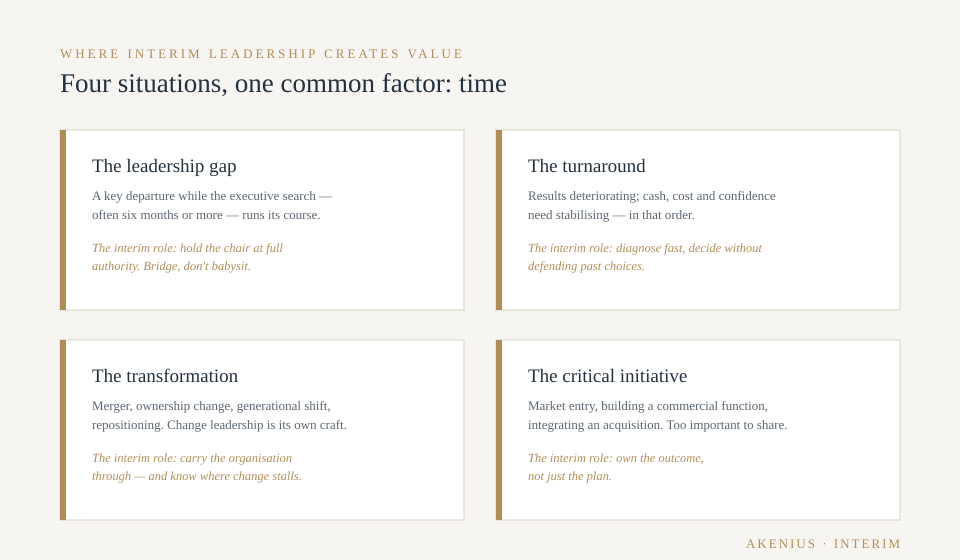
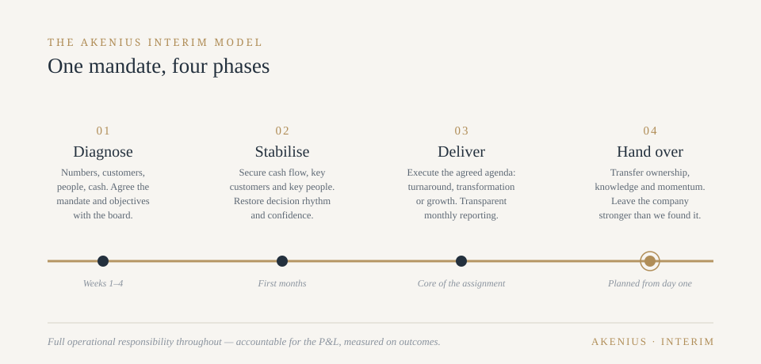

Where we deliver value
Four situations, one common factor: time
Interim leadership is not one situation. It's four — and each demands something different from the person in the chair.

A leadership gap that can't wait
A CEO or commercial director leaves — planned or not — and a proper executive search takes six months or more. Meanwhile decisions queue up, key people wonder, and momentum drains. We hold the role at full authority, not half-throttle: running the business, keeping the strategy moving, and preparing the ground so your permanent hire inherits a functioning organisation instead of a backlog.
A turnaround or performance crisis
When results deteriorate, the organisation usually knows something is wrong before the numbers confirm it. What's needed is someone who can diagnose fast, make the unpopular decisions without protecting past choices, and stabilise cash, cost and confidence — in that order. Having no history in the company is an asset here: we owe nothing to how things were done.
A transformation or ownership change
Mergers, generational shifts in family firms, private equity entry or exit, market repositioning. These periods break more companies than competition does — not because the strategy is wrong, but because leading through change is a different craft from leading steady state. We've carried organisations through entity consolidations, pricing overhauls and market transitions, and we know where they stall.
A critical initiative that needs an owner
Entering a new market. Building a commercial function. Integrating an acquisition. Some initiatives are too important to add to an already full executive's plate — and too operational to give to a consultant. We take ownership of the outcome, not just the plan.
Time to impact
Why companies choose interim leadership
A permanent executive search typically runs six to nine months from mandate to first day. An interim leader is operational within weeks — and the cost of an empty chair is rarely visible in the accounts, but always visible in the result a year later.
Speed
A permanent executive search typically runs six to nine months from mandate to first day. An interim leader is operational within weeks — and starts recovering momentum immediately.
Experience that exceeds the role
The economics of interim work mean you can bring in a heavier profile than you could — or should — hire permanently. A 22-person company doesn't need a former Nordic director on payroll forever. For eight months of transformation, it might be exactly what's required.
Objectivity
An interim leader has no career to manage inside your company, no alliances to protect and no legacy decisions to defend. That independence makes the difficult conversations — about people, pricing, structure — faster and cleaner.
Results, not reports
This is the difference between interim leadership and consulting: we don't recommend, we decide and deliver. Full operational responsibility, accountable for the P&L, measured on outcomes.
Cost that follows the need
No recruitment fees, no severance exposure, no long-term commitment. You pay for the period the need exists — and a well-executed interim period often pays for itself in the margin and momentum it recovers.
A stronger handover
The assignment isn't finished when the period ends. It's finished when your organisation — and your permanent leader — can carry what was built. Structured knowledge transfer is part of the mandate from day one.
The Akenius interim model
How an engagement runs
Every assignment is different; the discipline is the same. One mandate, four phases.

Diagnose
Weeks 1–4. Understand the business faster than the business expects. Numbers, customers, people, cash. Agree the mandate and the measurable objectives with the board.
Stabilise
Secure what can't wait — cash flow, key customers, key people, decision-making rhythm. Restore confidence inside and outside the company.
Deliver
Execute the agreed agenda: turnaround, transformation, growth initiative or bridge-to-recruitment. Report progress against the objectives set at the start — transparently, every month.
Hand over
Transfer ownership, knowledge and momentum to the permanent organisation. Document what was changed and why. Leave the company stronger than we found it — the only definition of success that matters.
Why Akenius
The person you meet is the person who does the work
25+ years of Nordic industry leadership: P&L ownership across Nordic markets, global pricing responsibility, entity consolidation, and board experience including Kemp & Lauritzen A/S in Denmark. Currently active in interim CEO work — this is not a service we added; it's what we do.
Operator-led consulting means the person you meet is the person who does the work, carries the responsibility and answers for the result.
A conversation costs nothing. An empty chair does.